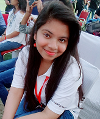

Welcome to my website
Hello, I am Ashi Anand.

Currently I am student of KIET Group Of Institutions.
Contact No. : 7860681907
Email : ashianand21@gmail.com
Twitter : https://twitter.com/ashianand0607
LinkedIn : https://www.linkedin.com/in/ashi-anand-224374105/
Aim :-
Intend to build a career with leading corporate of hi-tech environment with committed and dedicated people, which will help me to explore myself fully and realize my potential willing to work as key player in challenging and creative environment.
Academic Qualification :-
- Pursuing Master of Computer Applications from KIET Group Of Institutions.
- B.Com from Lucknow University in 1017.
- Intermediate from ISC board in 2014.
- High School from ICSE board in 2012.
Professional Qualification :-
- A level (NIELIT) from UPTEC Alambagh.
- O Level (NIELIT) from UPTEC Alambagh.
- Certification in Programming in Data Structure using C Language
- Certification in .NET+SQL Server
Technical Skills:-
- Operating System : DOS, Windows xp, Windows 7.
- Programing Language : HTML, C Language, C++ .
- Web Tools : HTML, CSS.
- Web Programming: HTML.
- Database : MS Access.
- Concept: Networking.
Projects Undergone :-
- O Level project on Solar System.
- Platform Use : HTML
- Team Size : 3
- A Level project on Online Examination System
- Plateform Use : .NET
- Team Size : 1
- Projects Completed in MCA 1st Year:-
- DM-WEBGURU
- EDR-group
- MBA Conference
- DN College
- Mechanical Conference
- CIPA
Game : collect-eggs
My project links
- EDR-group : http://edr-group.com
- MBA Conference : http://www.kiet.edu/mba_conference/home.html
- DN Coll : www.dncollege.net
- Mechanical Conference : moodleit.kiet.edu/ICRTIME2k18/home.html
- CIPA : http://moodle.kiet.edu:8000
Achievements
- Certificate of excellence in Testing Tool Selenium.
- Certificate of Merit in UNIX and Shell Programming
- Certificate of Appreciation in INNOTECH-2k17
- Certificate of Appreciation in PROEX-2k18
- Certificate of Appreciation in Creative Writing(Literary Fest 2017)
Personal Details :-
-
Father’s Name : Late Mr. Anil Kumar Khare
- Date of Birth : 06 July 1996
- Sex : Female
- Nationality : Indian
- Language Known : Hindi & English
- Hobbies : Listening music, Dance & Drawing